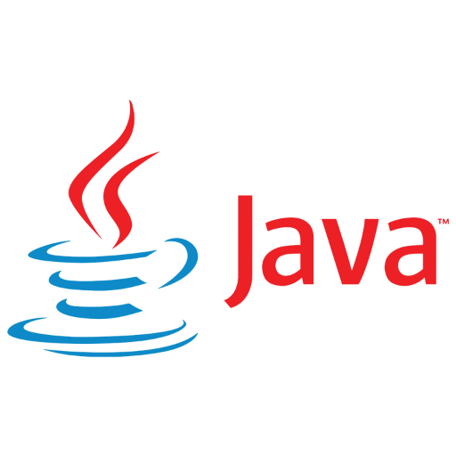

## Java 17 en Spring Boot 3  <img src="images/spring_boot.png" width="40%"/> -- ## Wie zijn wij? Robbin Troost Java Developer Aegon Hypotheken Notes: * IT-for-IT bij Aegon Hypotheken * 26 jaar woonachtig in Leersum * Java Masterclass. -- Joost van Gils Java Developer ABN AMRO - Personal Banking Notes: * 51 jaar * Java sinds 2001 (Java 1.3), also Scala + functional programming style * Bij AA sinds november 2022 * Hobbies: tech, music (midi), home automation -- ## Context * Spring Boot 2.x EOL * Upgraden vereist minimaal Java 17 * Nieuwe features in zowel Spring als Java * Migratie-ervaring en takeaways Notes: Spring Boot 2.7 is EOL op 18 november 2023. Commerciele support loopt nog tot 18 feb 2025. --- ## Java 17 -- ## Java is iets meer dan 27 jaar oud | versie | release date | support eindigt | | ------------ |:---------------:| ---------------:| | 1.0 | 23-01-1996 | ? | | SE 5 | 29-09-2009 | April 2015 | | SE 8 (LTS) | 18-03-2014 | December 2030 | | SE 11 (LTS) | 25-09-2018 | September 2026 | | *SE 17 (LTS) | 14-09-2021 | September 2029 | | SE 21 (LTS) | 19-09-2023 | September 2031 | Notes: Oracle. Azul, Red Hat, etc dates differ -- ## Features | version | features | | --- |:----------------------------------------:| | 5 | generics, annotations, enums, autoboxing, vararg, static imports | | 8 | lambdas, stream API, java.nio (7), default methods | | 11 | var keyword (10), http client, lambda local var syntax | -- ## Wat gaan we bekijken? * Records * Pattern matching * Text blocks * Helpful NPEs * Switch expressions * Sealed classes * Improved Stream API * Vector API (incubator) * Foreign Function and Memory Access API (incubator) -- ## Records -- ```java public record Point(long x, long y) { // nothing to see here } ``` -- * Gelijkwaardig aan Lombok's @Value * Implicit * all-args constructor * getters voor alle velden * `equals` en `hashcode` method * `toString` method * Geen extends mogelijk. Hiervoor is Lombok weer handig. * Efficient op de JVM Notes: * Lombok wordt ook veel gebruikt voor het builder pattern. De technieken zijn niet exclusief, maar vullen elkaar aan. -- ```java public record Point(long x, long y) { // nothing to see here } ``` ```java var p = new Point(10, 20); var q = new Point(10, 20); ``` ```java System.out.println( p ); System.out.println( p.x() ); System.out.println( p.equals(q) ); ``` ```sh Point[x=10, y=20] 10 true ``` -- ## Pattern matching (instanceOf) Notes: Pattern matching involves testing whether an object has a particular structure, then extracting data from that object if there's a match. -- Java 11 ```java if (obj instanceof String) { String s = (String) obj; System.out.println(s.length()); } ``` Java 17 ```java if (obj instanceof String s) { System.out.println(s.length()); } ``` -- ### Pattern matching voor records (JDK 21) -- Java 17 ```java record Point(int x, int y) {} ``` ```java static void printSum(Object o) { if (o instanceof Point p) { int x = p.x(); int y = p.y(); System.out.println(x+y); } } ``` Java 21 ```java record Point(int x, int y) {} void printSum(Object o) { if (o instanceof Point(int x, int y)) { System.out.println(x+y); } } ``` -- ## Text blocks -- Java 11 ```java String html = "<html>\n" + " <body>\n" + " <em>Cool LTS Java 17 Features</em>\n" + " </body>\n" + "</html>\n"; ``` Java 17 ```java String html = """ <html> <body> <em>Cool LTS Java 17 Features</em> </body> </html> """; ``` -- ## Helpful NullPointerExceptions -- Java 11 ```java var street = customer.getAddress().getStreet(); ``` ```sh Exception in thread "main" java.lang.NullPointerException at com.company/com.company.App.main(App.java:17) ``` -- Java 17 ```java var street = customer.address().street(); ``` ```sh Exception in thread "main" java.lang.NullPointerException: Cannot invoke "com.company.Address.street()" because the return value of "com.company.Customer.address()" is null at com.company.Application.main(App.java:21) ``` -- ## Switch expression -- ```java int numDays = switch(month) { case JAN, MAR, MAY, JUL, AUG, OCT, DEC -> 31; case APR, JUN, SEP, NOV -> 30; case FEB -> { if (year % 400 == 0) yield 29; else if (year % 100 == 0) yield 28; else if (year % 4 == 0) yield 29; else yield 28; } }; ``` * een *expression*, niet een *statement* * nieuwe syntax voor beide mogelijk (->) * voorkomt fall-through (`break`) * nadruk op bestaande ergernissen wegnemen Notes: Een expressie produceert altijd een resultaat, een statement niet (bijv. een void call) -- ## Sealed classes -- ```java public abstract sealed class Animal permits Dog, Cat { } public final class Dog extends Animal { } public final class Cat extends Animal { } ``` -- Waarom? * Een enum is exhaustive voor switch, maar wat als we type classes gaan checken? * Zonder deze construct final of package-private, alles of niets. * Meer vrijheid voor de ontwikkelaar: widely accessible, not widely extensible Notes: * Open-closed principle? * Design for extension, else prohibit it? * Laatste punt kun je denken aan een abstract class -- ## Improved streams API -- Voorheen: ```java var list = stream.collect(Collectors.toList()) ``` wordt: ```java var list = stream.toList(); ``` Let op: `toList()` geeft een immutable List -- ## Vector API (incubator) -- * Vierde incubator, dus vrij complex (sinds 2018) * Meerdere berekeningen in een enkele CPU-cycle (SIMD) * Sneller dan equivalente scalar operations * Platform-agnostisch * Auto vectorisation -- Voorheen: ```java s[0] = s[0] + v[0]; s[1] = s[1] + v[1]; s[2] = s[2] + v[2]; s[3] = s[3] + v[3]; ``` Java 16+ ```java float[] a = new float[] {1f, 2f, 3f, 4f}; // 4x32 bits float[] b = new float[] {5f, 8f, 10f, 12f}; // 4x32 bits // allebei de vectors 128 bits want 4x32, 0 offset FloatVector first = FloatVector.fromArray( FloatVector.SPECIES_128, a, 0); FloatVector second = FloatVector.fromArray( FloatVector.SPECIES_128, b, 0); FloatVector result = first .add(second) .pow(2) .neg(); ``` -- ## Foreign Function and Memory Access API (incubator) -- * Backbone voor o.a. de Vector API * Momenteel alleen C-libraries * Voorheen JNI, maar vrij beperkt * Functie calls en memory buiten de JVM uitvoeren en aanspreken * Efficient en veilig Notes: * Bij JNI moest het JVM/platform-specific gecompiled worden om met elkaar te laten werken -- Extern memory gebruiken: ```java // Allocate off-heap memory to store four pointers String[] javaStrings = { "mouse", "cat", "dog", "car" }; MemorySegment offHeap = MemorySegment.allocateNative( MemoryLayout.ofSequence(javaStrings.length, CLinker.C_POINTER)); ``` Een externe C-functie aanroepen: ```java MethodHandle radixSort = CLinker.getInstance() .downcallHandle( CLinker.systemLookup().lookup("radixsort"), ... ); radixSort.invoke(offHeap.address(), javaStrings.length, MemoryAddress.NULL, '\0'); ``` -- ## Waarom (geen) Java 17 gebruiken -- ## Cons * Geen toegevoegde waarde om te upgraden * Niet alle libraries zullen al werken op Java 17 * Infra die achterloopt (IDE, SonarQube, build agents, live environments) * Gebruik van nieuwe features vereist ook up-to-date kennis -- ## Pros * Spring Boot 3+ heeft Java 17 nodig * Bug fixes, security improvements * Je hoeft niet gelijk nieuwe features te gebruiken * Instant performance boost Java 17 is ongeveer 8.5% sneller dan Java 11 op de G1 GC en 6.5% op de parallel GC ([source](https://www.optaplanner.org/blog/2021/09/15/HowMuchFasterIsJava17.html)). --- ## Spring Boot 3 -- ## Wat is nieuw? ([release notes](https://github.com/spring-projects/spring-boot/wiki/Spring-Boot-3.0-Release-Notes)) -- ## Jakarta EE versie 9 met support voor 10 Maar dus ook: Hibernate Validator 7+, Tomcat 10+, en Jetty 11+ -- ## Spring Native ```sh mvn spring-boot:aot-generate ``` SB3 vervangt Spring Native, geen extra plug-ins nodig -- ## Observability [Auto-configuration voor Micrometer](https://docs.spring.io/spring-boot/docs/3.0.0/reference/html/actuator.html#actuator.observability) ```java @Component public class MyCustomObservation { private final ObservationRegistry observationRegistry; public MyCustomObservation(ObservationRegistry observationRegistry) { this.observationRegistry = observationRegistry; } public void doSomething() { Observation.createNotStarted("doSomething", this.observationRegistry) .lowCardinalityKeyValue("locale", "en-US") .highCardinalityKeyValue("userId", "42") .observe(() -> { // Execute business logic here }); } } ``` -- ## Meer observability Auto-configuration voor [Micrometer Tracing](https://docs.spring.io/spring-boot/docs/3.0.0/reference/html/actuator.html#actuator.micrometer-tracing) Support * Brave, OpenTelemetry, Zipkin, Wavefront * (Auto-config) support OtlpMeterRegistry, * (Auto-config) support Prometheus Examplars (maakt trace ID beschikbaar voor Prometheus) -- ## Spring MVC Problem Details Standard [RFC7807](https://github.com/spring-projects/spring-framework/issues/27052) zonder extra dependencies -- ```java Problem.builder() .withType(URI.create("https://example.org/out-of-stock")) .withTitle("Out of Stock") .withStatus(BAD_REQUEST) .withDetail("Item B00027Y5QG is no longer available") .with("product", "B00027Y5QG") .build(); ``` ```json { "type": "https://example.org/out-of-stock", "title": "Out of Stock", "status": 400, "detail": "Item B00027Y5QG is no longer available", "product": "B00027Y5QG" } ``` -- ## Spring MVC `HttpMethod` is nu een class ```java HttpMethod lock = HttpMethod.valueOf("LOCK"); ``` -- ## Trailing slash `GET /api/v1/todos/name/` matcht standaard niet meer op ```java @RequestMapping("/api/v1/todos/name") ``` -- ## Andere zaken * Apache HttpClient5 ipv HttpClient * Veel veranderingen in Actuator * Veranderingen in Spring Batch * Veel algemene verbeteringen en naamswijzigingen van properties -- ## Migrating * Migreer eerst naar Spring Boot 2.7 * Gebruik je Spring Security, upgrade eerst naar [versie 5.8](https://docs.spring.io/spring-security/reference/5.8/migration/index.html) * Check voor gebruik deprecated code * Heb je nog [legacy config file processing](https://spring.io/blog/2020/08/14/config-file-processing-in-spring-boot-2-4) nodig? * Migreer naar Java 17 * Check alle 3rd-party dependencies, moet Jakarta EE9+ zijn * Check ook Spring Cloud dependencies * Lees de [migration guide](https://github.com/spring-projects/spring-boot/wiki/Spring-Boot-3.0-Migration-Guide) -- ## Jakarta EE ```java import javax.servlet.http.HttpServletRequest; ``` wordt ```java import jakarta.servlet.http.HttpServletRequest; ``` -- ## Migration - Properties bijvoorbeeld `server.max.http.header.size` naar `server.max-http-request-header-size` ```xml <dependency> <groupId>org.springframework.boot</groupId> <artifactId>spring-boot-properties-migrator</artifactId> <scope>runtime</scope> </dependency> ``` -- ## Meer lezen * [Release notes Spring Boot 3](https://github.com/spring-projects/spring-boot/wiki/Spring-Boot-3.0-Release-Notes) * [Release notes Spring 6.0](https://github.com/spring-projects/spring-framework/wiki/What's-New-in-Spring-Framework-6.x) * [Migration guide](https://github.com/spring-projects/spring-boot/wiki/Spring-Boot-3.0-Migration-Guide) * [Spring Security 6.0 migration](https://docs.spring.io/spring-security/reference/6.0/migration/index.html) --- Migratie-ervaringen bij Aegon Hypotheken -- * Algemene aanpak incl. Java 17 * Bootstrap properties * Spring.factories -- Stack * Maven * SonarQube 8.9.10 Enterprisie * Kubernetes op AWS * Docker containers voor deployment en microservice * Parent pom voor versiebeheer richting teams -- Vragen * Support SonarQube Java 17? * Hoe ondersteunen we versie 11 en 17 tegelijk? * Hoe zorgen we dat teams vooruitgaan naar versie 17? -- * Build container: versie 11 en 17 ondersteunen via SDKman * De parent pom bevat een <java.version> die zich vertaalt naar een compiler target. * In pipeline: target bepalen via POM ```sh COMPILER_TARGET=$(mvn help:evaluate -Dexpression="maven.compiler.target" \ --batch-mode -DforceStdout \ -q) ``` ```sh JAVA_HOME="$SDKMAN_DIR/candidates/java/${COMPILER_TARGET}" echo "Setting home to $JAVA_HOME" echo "##vso[task.setvariable variable=JAVA_HOME]$JAVA_HOME" ``` -- Autoconfig in spring.factories deprecation (2.4x) -- Spring 2.x via spring.factories: ```java resources/META-INF/spring.factories -> org.springframework.boot.autoconfigure.EnableAutoConfiguration=xxx ``` En de autoconfiguratie: ```java @ComponentScan("com.aegon.commons.amqp") @PropertySource('...') public class { /* ....*/ } ``` Vanaf Spring 2.7: ```java resources/META-INF/spring/org.springframework.boot.autoconfigure.AutoConfiguration.imports ``` Vanaf Spring 3.0: geen spring.factories support meer voor autoconfiguration Notes: Zie ook https://github.com/spring-projects/spring-boot/issues/29699 -- Bootstrap.properties deprecation (2.4x) -- * Spring Cloud gaat hand-in-hand met Spring versies (compatibility) * Parent bootstrap context * Verplaatsen naar application.properties * Alternatieven: Weer aanzetten ``` spring.cloud.bootstrap.enabled=true ``` Starter ```java <dependency> <groupId>org.springframework.cloud</groupId> <artifactId>spring-cloud-starter-bootstrap</artifactId> </dependency> ``` Notes: Laadt externe properties en decrypt properties in locale config files. Wordt bij ons samen gebruikt met Spring Cloud Config Server. Application name wordt in de bootstrap gezet om het zo vroeg mogelijk beschikbaar te hebben. --- Take-aways -- * Eerst naar Java 17 en dan Spring Boot 3 * Alle grote frameworks / tooling werkt al * Gratis updates van 2.x stoppen * Het is leuk om met de laatste technologie te werken -- ## Bedankt!